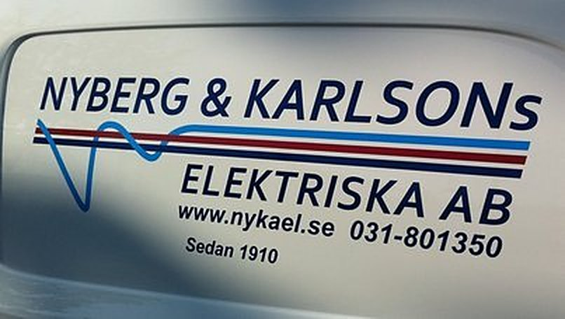

01
Servicearbeten
Servicearbeten är huvuddelen av vår verksamhet. Vi utför elservice åt en stor kundkrets inom industri, fastighetsförvaltning och butiker.

Nyberg & Karlsons Elektriska AB utför främst servicearbeten åt kunder inom industri, fastighetsförvaltning och butiker, men även nyproduktion och ombyggnader.
Nyberg & Karlsons Elektriska AB startades 1910 och har sedan dess utfört elinstallationer i Göteborgsområdet.
Verksamheten består i huvudsak av servicearbeten åt en stor kundkrets inom industri, fastighetsförvaltning och butiker, men även en del nyproduktion och ombyggnader.

Service är kärnan i verksamheten. Vid sidan av den åtar vi oss nyproduktion och ombyggnader.
Servicearbeten är huvuddelen av vår verksamhet. Vi utför elservice åt en stor kundkrets inom industri, fastighetsförvaltning och butiker.

Vi utför elinstallationer och servicearbeten åt kunder inom industrin i Göteborgsområdet.

Vi arbetar åt kunder inom fastighetsförvaltning med servicearbeten och elinstallationer.

Vi utför servicearbeten och elinstallationer åt kunder med butiker.

Utöver servicearbetena utför vi en del elinstallationer i nyproduktion.

Vi utför även elarbeten vid ombyggnader.
Företaget har utfört elinstallationer i Göteborgsområdet sedan starten 1910.
Huvuddelen av verksamheten består av servicearbeten åt en stor kundkrets.
Vi arbetar åt kunder inom industri, fastighetsförvaltning och butiker.
Ring eller mejla direkt till någon av våra projektledare, eller kontakta växeln på 031-80 13 50.
Berätta vad som ska göras så återkommer vi. Ni kan också vända er direkt till någon av våra projektledare.